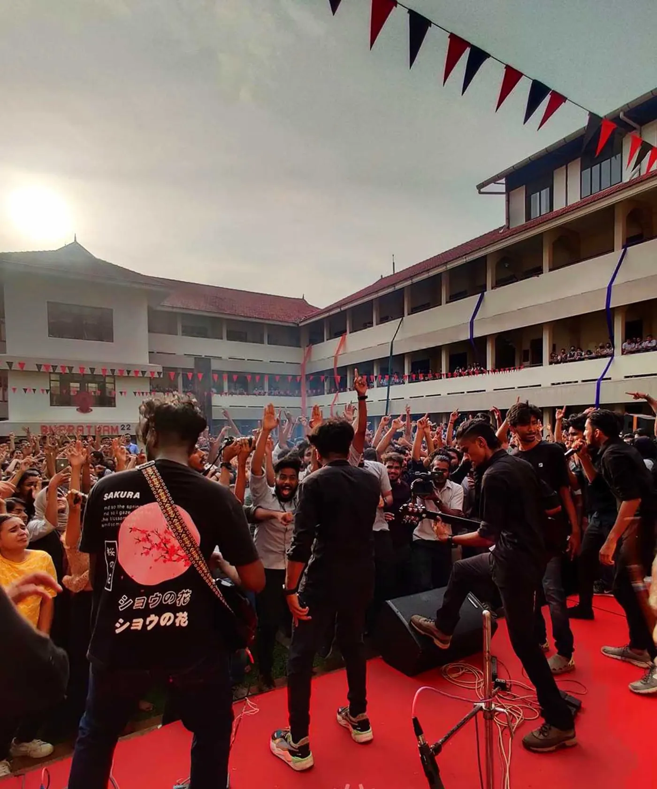
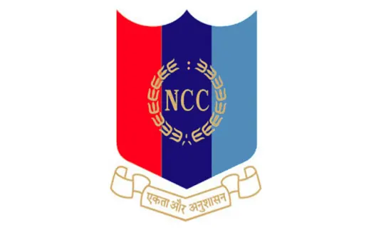
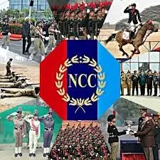

“…India needs youth with knowledge, capacity for hard work and love for the nation and above all disciplined citizens with value system. In my view, two years NCC Training must be made compulsory for all eligible students, both for boys and girls at the school or college level.”
–Extracts from the address of His Excellency Dr. APJ Abdul Kalam, the then President of India, to NCC Cadets on 29 Nov 2004.
Activities of the Academic Year 2025-2026
Activities of the Academic Year 2024-2025
Activities of the Academic Year 2023-2024
Activities of the Academic Year 2022-2023
About Ncc
The National Cadet Corps (NCC) is not a Para-Military organization. It is a youth development movement. It has enormous potential for nation building. The NCC provides opportunities to the youth of the country for their all-round development with a sense of Duty and Discipline, Commitment, Dedication, and Moral Values so that they become able leaders and useful citizens.
The NCC provides exposure to the cadets in a wide range of activities., with a distinct emphasis on Social Services, Discipline and Adventure Training. It has emerged as the biggest uniformed youth organization of the country symbolizing its motto Unity and Discipline.
NCC of FISAT started in May 2022 is been attached to 22 Bn-KERALA REGIMENT NCC and has total strength of 52 which includes girl cadets.
>> All the activities of NCC will start at the beginning of new academic year in the month of August/September.
>> Totally 20 parades will be conducted on Saturdays and general holidays for the enrolled cadets , not disturbing the academics of the students.
>> During the parade time various activities like drill , weapon training and theory classes on military subjects will be conducted to the students.
NCC fosters the overall development of each of its cadet in every field one can name-be it sports, academics, cultural activities or adventure activities. NCC make an indelible mark in all of it.
Apart from the conventional activities like drill, weapon training and theory classes on military subjects in which the cadets show profound excellence. We also excel in the activities conducted in camps like National integration camp, CATC, Basic Leadership Camp, the most awaited trekking expeditions, by showing a tremendous level of endurance and grit. We form an integral part of celebrating nationally important days like INDEPENDENCE DAY and REPUBLIC DAY in college and perform high quality guard of honour at important ceremonies held in the college. The saga of excellence continues with the achievements of NCC in cultural aspects such as dance and music in the camps. To keep the spirits high and encourage the cadets to perform better, NCC FISAT organize regular seminars from esteemed personalities in various sectors like armed forces and civil services. NCC instills in the cadets a deep sense of social service and service to fellow countrymen , this will be evident in our activities.
Camps And Training
Training
Total training period for SD and SW is 3 years. Every cadet of the Senior Division has to undergo service training for a period of at least 4 hours per week during the training year. However, no training is carried out during periods when the college l through which a cadet is enrolled is closed for a vacation. Every cadet of the Senior Division has undergo service training for a minimum period of 75% of total hours during the annual college session. Every cadet attends an annual training camp of 9–10 days, also known as National Combined Annual Training Camp. For SD/SW the duration is usually for up to 30 days. At the end of the camp training the cadets receive a certificate of successful completion.
Camps
A variety of opportunities to attend the camps and improvise in every aspect of a person’s personality is given in NCC . Some of the Camps include
>> Republic Day Camp (RDC)
>> National Integration Camp (NIC)
>> Basic Leadership Camp (BLC)
>> Advance leadership Camp (ALC)
>> Army Attachment Camp
>> Combined Annual Training Camps (CATC)
>> Hiking And Trekking Camps
>> Thal Sainik Camp (TSC)
>> Rock Climbing Camps (RCC)
>> Youth Exchange Programme (YEP)
Certificate Examinations
There are Three Certificates in NCC. Below describes about it from lower value to higher value:-
>> Certificate – A : It can be written by JD/ JW cadets of NCC, cadets of class 8 & 9. After passing those classes it can’t be obtained.The candidate must have attended a minimum 75% of total training periods laid down in the syllabus for the first & second years of JD/JW NCC(All Wings).The candidate must have attended one Annual Training Camp.
>> Certificate – B : It can be written by SD / SW cadets of NCC, cadets after class 10 & those studying for +2, +3 (degree). In the second year of training they can appear for the same.The candidate must have attended a minimum 75% of total training periods laid down in the syllabus for the first & second years of SD/SW NCC (All Wings).He/She must have attended one Annual Training Camp/NIC. Cadets possessing ‘A’ certificate will be awarded 10 bonuses marks.
>> Certificate – C : It is the Most important certificate for NCC cadet. Now it can be written in the 3 rd year of training, in the fourth year of B.Tech degree course / those having B certificate can write it in the first year after his +2 and in the 1st year of degree by SD / SW cadets only.The candidate must be possessing a ‘B’ certificate.Must have attended two ATCs or one ATC and in addition to it RD Camp Delhi,Centrally Organised Camp,Para Training Camp,Attachment Training with service units,National Integration Camp,Youth Exchange Programme,Foreign Cruise(Navy).
Recruitment Process
>> NCC recruitments with the start of academic year.
>> People who are interested in joining NCC can register their names with Dr.Prasad J C, Professor, CSE Department(NCC Caretaker) at NB 320. – Application form
>> The interested students will have to fill in a form provided to them
>> These students will be called for recruitment to test their physical fitness and other criteria to be fullfilled to join NCC.
>> The students will be interviewed by the ANO and the Senior Under Officer and the selected cadets will be notified.
Benefits Of Joining Ncc
We have already mentioned that joining NCC develops interpersonal skills of the students. NCC training helps students who want to join Indian Arm Forces but it’s not the compulsion to the trainee to join any part of Indian Army after completion of the training. Benefits of NCC also includes self-discipline and problem-solving skills.
The ‘C’ certificate is the most important certificate of NCC training. When we talk about the selection procedure of armed forces, the benefits of NCC certificate ‘C’ always give an advantage to the candidate. Indian Defence Services and Civil Services, both are the preferable career options. The reason behind choosing any one of them as a career is that both have high remuneration and a chance to serve the country directly. People working in defence and civil services get high respect, and this also a reason behind joining these two sectors. When an aspirant has a dream to be a part of any one of these sectors, they will have to make an early start. Joining NCC helps the cadets in the recruitment in Indian Defence services.
Public Sector
• Many organizations from the public sector give advantages to the cadets with ‘C’ certification like Indian Airlines, Pawan Hans Ltd, The National Small Industries Corp. Ltd. And many more.
Apart of this, many companies from private sector consider the NCC certificates as an advantage. When you mention the NCC certified or achieved NCC ‘C’ certificate in your resume, it gives a hint about your personality. So we would suggest the students should join NCC not only to join Indian Armed Forces but to be a disciplined person.
